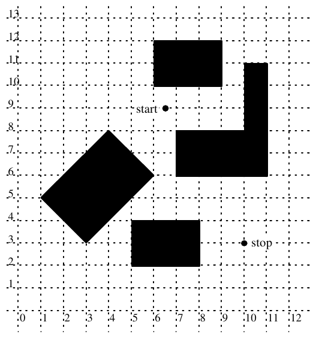

The Twentieth Annual ACM International Collegiate Programming Contest Finals · Problem C
Bicycle messengers delivering documents and small items from one office building to another have long been part of the guerrilla transportation services in several major U.S. cities. The cyclists themselves are a rare breed of riders who are notorious for their speed, their disrespect for one-way streets and traffic signals, and their unflinching bravery in facing motorized vehicles and pedestrians alike.
Bicycle messenger services tend to be very competitive, and Billy’s Bicycle Messenger Service is no exception. In order to boost its competitive edge as well as determine its actual expenses, BBMS is developing a new scheme for pricing deliveries that depends in part on the routes messengers travel. You are to write a program to help BBMS determine the minimum distances for various routes.
The following assumptions simplify your task:
Input for your program will be several scenarios of bicycle delivery trips. Each scenario is a bird’s-eye snapshot showing the locations of the buildings and the starting and ending points for a route (all measured with respect to a hypothetical infinite square grid). The picture below is a typical snapshot of buildings, which are shaded, and the route’s starting and stopping points. All are superimposed on a grid.

The input file represents several snapshots. Input for each snapshot consists of lines as follows:
| First line: | n | The number of rectangles comprising buildings in the snapshot (an integer greater than or equal to 0) |
| Second line: | x1 y1 x2 y2 | The x- and y-coordinates of the starting and stopping points of the route. |
| Remaining n lines: | x1 y1 x2 y2 x3 y3 | The x- and y-coordinates of three vertices of the rectangle representing a rectangular part of a building. |
The x- and y-coordinates of all input data are real numbers between 0 and 1000 inclusive. Successive coordinates on a line are separated by one or more blanks. The end of all input is signified by a “First line” with a negative number of rectangles.
To avoid problems with real precision, the input data set restricts all coordinates to be between 0 and 1000 inclusive. The interior enclosed by any two intersecting rectangles will be at least large enough to contain a square of .01 unit on a side. In addition, two buildings that do not intersect will be at least .01 unit apart.
Output for each snapshot is the number of the input record (snapshot #1, snapshot #2, etc.) and the distance of the shortest path from the starting to stopping points that does not go through the interior of any building. Diasance should be shown with two digits to the right of the decimal. Output for successive snapshots should be separated by blank lines.
The following input data file corresponds to the single snapshot from the illustration on the opposite side.
5 6.5 9 10 3 1 5 3 3 6 6 5.25 2 8 2 8 3.5 6 10 6 12 9 12 7 6 11 6 11 8 10 7 11 7 11 11 -1
Snapshot #:1 route distance: 7.28